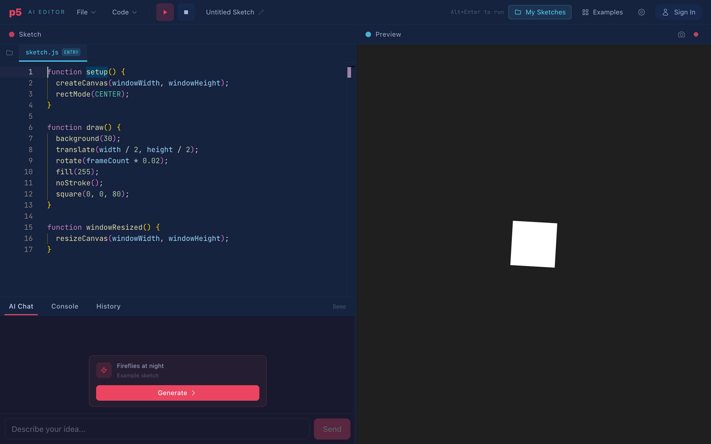

Section 1Small on purpose
I wanted to build a small web editor for p5.js sketches: Monaco on the left, the running canvas on the right, and a chat where you type "make the particles smaller" and the change arrives as a diff you can accept or reject. The kind of interaction Cursor made normal, scoped down to creative coding.
The small scope was the point. I was not trying to compete with Cursor; I was trying to understand it. A p5.js sketch is a few hundred lines: the whole codebase fits in one prompt, the whole problem fits in one head, and every result shows up on a canvas within a second. Hard to design a better laboratory.

The front half is simple: an editor component, a sandboxed iframe, a streaming chat. I had that working quickly. Then I wired the chat to the editor, and the project stopped being simple in the most educational way possible.
Section 2The first collision
Version one of "the AI edits your code" was exactly what you would guess: send the sketch and the request to the model, get back a code block, replace the file with it. It worked in the demo. It kept working just long enough for me to trust it.
Then the cracks appeared, one per week. Rewrites of a growing sketch got slow and expensive, because I was paying for 300 lines of output to change one. Models started eliding code on long files ("rest of the sketch unchanged"), which my naive replace turned into deletions. And I noticed I had no answer to a question I had never consciously asked: in what format should a model express a code edit?
I had assumed the answer was "code". It turns out the answer is a whole design space with names, benchmarks, published failure modes, and at least one company whose product is essentially a very good answer to it. I knew none of that. Which brings me to the part of this project I did not plan.
Section 3LLMs as tutor
Here is the honest version of how I learned this material: I asked the models. Not to write the code first, but to orient me. My starting question was some form of "how does Cursor apply edits so fast?", and the answer, imperfect as it was, handed me the vocabulary I didn't have: apply model, speculative decoding, search/replace blocks, edit format benchmarks, Aider. You cannot search for a thing you cannot name. The single most valuable thing an LLM did for this project was turn my vague confusion into a list of proper nouns.
From there a working method settled in, three rules long:
- Names from the model, facts from the source. Once I had the vocabulary, I read the primary material: Aider's benchmark write-ups, Cursor's engineering post on instant apply, the provider docs on caching and predicted outputs. The model's summaries were directionally right and wrong in details, roughly the ratio you'd expect from a very well-read friend recalling papers from memory.
- Ask for failure modes, not features. "Explain search/replace blocks" gets you marketing. "How do search/replace blocks fail in practice?" gets you trailing whitespace, ambiguous matches, and models drifting on indentation, which is precisely the list of things I would spend the next weeks handling. Failure-mode questions are where LLM tutoring earns its keep.
- Verify by building. Every technique got a smallest testable version in the editor the same day I learned it. The sketch on the canvas is merciless ground truth: either the particles got smaller or they didn't. A tutor that can be checked against reality is safe to learn from; one that can't is a rumor mill.
One more thing worth admitting: the models were also my rubber duck for design decisions. "Here is my matching cascade, argue against it" produced better objections than I produced alone. The pattern that never worked was asking for agreement; the pattern that always worked was asking for attack.
Section 4Case files
Every technique in the editor arrived the same way: something broke, I asked and read until I understood it, and a small implementation shipped. Four of those cycles, in order.
Case 1: the expensive rewrite
The fix is a contract in the system prompt: two formats and a rule for choosing. Big changes come back as a full file; small ones come back as search/replace blocks:
<<<SEARCH
background(30);
===
background(48, 24, 38);
>>>REPLACEFind this text, replace it with that text. Understanding why this format wins meant understanding why the alternatives lose, and each one loses differently:
| Format | Addresses by | Reliability | Cost for a 1-line edit |
|---|---|---|---|
| Full rewrite | nothing | Highest | Whole file |
| Line numbers | position | Lowest | Minimal |
| Unified diff | position + context | Low as specified | Low |
| Search/replace | content | High | Low |
| Lazy edit + apply model | content, learned | High | Low + a second model |
Line-number edits ("replace lines 7 through 7 with...") have the best economics on paper and the worst reliability in practice, because models cannot count lines. A model reads the file as a token stream, not a numbered grid; its idea of "line 7" comes from attention, not an index, and it is frequently off by one with complete confidence. Worse, if a reply contains three edits, applying the first one shifts the line numbers of the other two.
Unified diffs, the git format, carry context lines,
which helps, but the hunk header (@@ -4,7 +4,7 @@) is a
line-number edit hiding inside a better format. Aider's fix is revealing:
their applier ignores the line numbers entirely and locates hunks by
searching for the context lines instead,[2]
which quietly turns diffs into search/replace.
Search/replace asks the model for the one thing it does reliably with code it just read: quoting it. Aider's benchmarks across models settled on this as the most reliable practical format,[1] and my numbers agreed: a one-line change went from roughly 2,400 output tokens to 30.
The lazy edit plus apply model is Cursor's route: let the big model write a sketchy partial edit, then have a small fine-tuned model merge it into the file at around a thousand tokens per second.[3] The right answer if you can train and serve a second model. I couldn't, which becomes relevant in case 3.
Case 2: near matches
The instructive part was why the drift happens. I had been treating the model like it had the file in a clipboard. It doesn't. It has a probabilistic memory of the file, and its quote of your code is a reconstruction. So the fix stopped being "write a sterner prompt" and became "meet the reconstruction halfway".
Concretely, each block gets three attempts:
flowchart TD
A[Search block] --> B{Exact substring<br/>match?}
B -- yes --> C[Replace first occurrence]
B -- no --> D{Per-line match,<br/>ignoring trailing<br/>whitespace?}
D -- "exactly 1" --> E[Splice replacement lines]
D -- no --> F{Per-line match,<br/>fully trimmed<br/>indent-insensitive?}
F -- "exactly 1" --> G[Re-indent replacement<br/>to the target, splice]
F -- "0 or >1" --> H[Fail the block:<br/>not found / ambiguous]
style H fill:#7a2b2b,color:#fff
Exact substring match first. Failing that, a line-by-line match that ignores trailing whitespace, the most common drift. Failing that, a fully trimmed match that ignores indentation and re-indents the replacement to fit the file, so the file stays consistent even when the model's memory of it wasn't. One rule keeps the fuzzy tiers honest: the match must be unique. If a trimmed search fits two places, the block fails instead of guessing, because an edit applied in the wrong place corrupts the sketch silently, and a failed edit is just a retry. Only one of those is dangerous.
Case 3: the wiped sketch
This one hurt and taught in proportion. The history panel recovered the sketch, but "the undo button saved us" is not an architecture. The defense I ended up with has two halves.
Detection. A block claiming to be a full file gets
flagged as a fragment if its first line is indented (no complete file starts
mid-scope), if it targets the main sketch but never declares
setup(), or if it is under half the target file's size and
re-declares none of its symbols.
Merging. Once a fragment is detected, the right move is not to reject it. The model's edit is usually correct, just incomplete. So the client tries to place it:
flowchart LR
subgraph File["Existing file"]
L1["let plankton = [];"]
L2["function setup() {"]
L3[" for (let i...) { ◄ anchor"]
L4[" size: random(2, 6),"]
L5[" hue: random(...) ◄ anchor"]
L6[" }"]
L7["}"]
L8["function draw() {...}"]
end
subgraph Fragment
F1[" for (let i...) {"]
F2[" size: random(1, 3),"]
F3[" hue: random(...)"]
F4[" }"]
end
F1 -.match.-> L3
F3 -.match.-> L5
The fragment's lines that appear exactly once in the file, compared
trimmed, become anchors: unique landmarks that pin the fragment to a
location. If at least two anchors line up in the same order they appear in
the fragment, the region they span is replaced by the fragment and the rest
of the file survives. The one-line change lands as a one-line diff, and
draw() lives. No safe anchors, no edit: the suggestion stays
visible in chat instead, where you can apply it by hand or ask again. A poor
man's apply model, no training required.
Case 4: the growing bill
Two changes fixed it. First, older assistant messages get their code blocks replaced with a short placeholder before sending; only the newest reply keeps its code, so "apply what you just suggested" still works. Second, the prompt is assembled most-stable-first, with cache breakpoints after the stable parts:
flowchart LR
subgraph Request["Prompt assembly (per request)"]
SP["System prompt<br/>📌 cache breakpoint"] --> CC["Current sketch files<br/>📌 cache breakpoint"]
CC --> H["History (last 10)<br/>older code stripped"]
H --> M["New user message"]
end
The ordering is the entire trick. Providers cache a stable prefix[4] and cached tokens bill at roughly a tenth of the price, so the prompt goes from most stable to most volatile: the system prompt never changes, the sketch changes only when you edit it, the history changes every turn. The fix was not "send less"; it was "put the unchanging parts where the cache can see them". Where the provider supports it, the current code also goes along as a predicted output,[5] which makes full rewrites decode 2–4× faster because a rewrite is a near-copy of the file.
Section 5The learning loop
Lay the four cases side by side and the same shape repeats:
flowchart LR
A[Something breaks<br/>in the editor] --> B[Ask an LLM:<br/>name the problem space]
B --> C[Read the primary<br/>sources it pointed to]
C --> D[Build the smallest<br/>testable version]
D --> E{Does the sketch<br/>behave?}
E -- no --> B
E -- yes --> F[Technique ships,<br/>writeup follows]
F --> A
None of the three parts works alone. The LLM without sources drifts into plausible fiction. The sources without a project are trivia. The project without the tutor moves at the speed of my ignorance. Together they compound: every incident became a technique, and every technique became a writeup.
What closes the loop is the domain. p5.js verifies every experiment for free: the canvas does what you asked, or it doesn't. That became my main criterion for choosing a learning project. Not "is it impressive", but "does it grade my homework instantly".
Section 6If you try this
The recipe generalizes beyond editors:
- Build the toy version of the thing you admire. Small enough to fit in your head, real enough to break. The breakages are the curriculum; my four best lessons were four failures.
- Pick a domain with instant ground truth. Creative coding, games, plotters, anything visual. A learning loop is only as fast as its verification step.
- Use LLMs to get the vocabulary, then leave. Their superpower is converting confusion into searchable names. Take the names to the primary sources; come back with hard questions.
- Ask for failure modes and for attacks. "How does this break" and "argue against my design" consistently outperformed "explain this" and "is this good".
- Ship the smallest testable version the same day. Understanding you haven't executed is a feeling, not knowledge.
The editor ended up genuinely fun to use, which matters more than I expected: playing keeps finding edge cases, and edge cases keep the loop spinning. But the tool was never really the deliverable. The understanding was. This is what the project was for.
Sources & further reading
- Aider, Edit format benchmarks. Reliability of edit formats measured across models; the primary material behind cases 1 and 2.
- Aider, Unified diffs make GPT-4 Turbo 3× less lazy. Includes the applier design that ignores hunk line numbers.
- Cursor, Near-instant full-file edits. The lazy-edit plus fine-tuned apply-model architecture, the industrial solution to case 3.
- Anthropic, Prompt caching. How cache breakpoints work and what cached tokens cost.
- OpenAI, Predicted Outputs. Speculative decoding against a known likely output.
- Aider, Edit formats reference. The whole, diff, and editblock formats as shipped.
- p5.js. The creative-coding library this is all in service of.